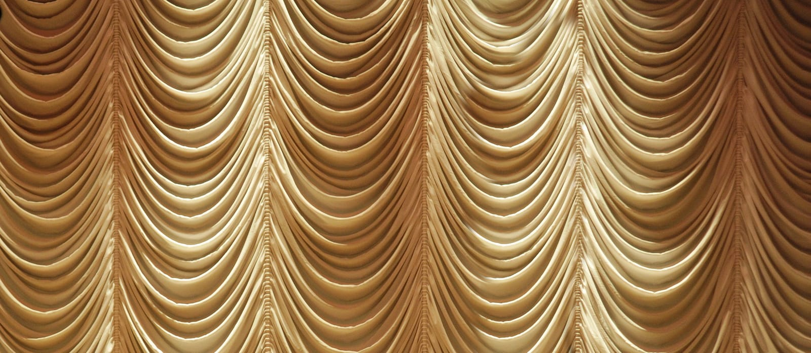

Главная / Участие в конкурсах и фестивалях
Участие в конкурсах и фестивалях
Творческие коллективы Дворца культуры «Исток» — постоянные участники и призёры конкурсов и фестивалей разного уровня.

На больших сценахКонкурсы и фестивали
Участие в конкурсах — важная часть творческого роста наших артистов и коллективов и возможность представить город Фрязино на больших сценах. За годы работы коллективы Дворца стали лауреатами и дипломантами множества смотров.
Среди ярких побед
- «Акварель» — лауреат международных фестивалей «Пражский звездопад» (Прага) и «Золотая пальмира» (Санкт-Петербург)
- «Традиция» — призёр конкурсов «Серебряный голос», «Романсиада без границ», «Бегущая по волнам»
- «Играй, гармонь!» — участник международного фестиваля «Гармоника — душа России» и съёмок передачи в Кремле
- «Родничок» — лауреат конкурса «Дни славянской письменности и культуры»
Дворец культуры «Исток» и сам выступает организатором городских фестивалей и творческих конкурсов.
Все награды и звания